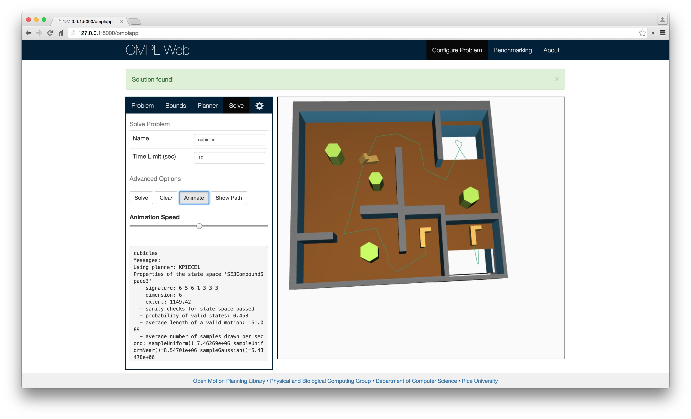

2015-07-07
Once a motion planning problem has been solved, the user is presented with several options for visualizing the solution. Initially, a line is displayed indicating the path from the start position to the goal position. The user can then toggle an animation of the robot and adjust its speed as it travels from its starting position to the goal. In addition, a static visualization consisting of robots placed at points along the solution path is also available.
The user can interact with the visualiztion using the mouse. Left-clicking and dragging will rotate the environment while right-clicking and dragging will pan. The visualization was constructed with WebGL using the THREE.js library.